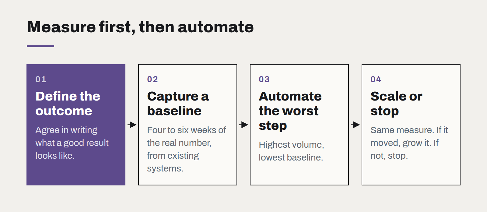

Metrics before models
Why the first automation project should be the one nobody wants to demo, and how to sequence the rest behind it.

When a business decides to "do something with AI", the first project chosen is usually the most visible one: a customer-facing assistant, a forecasting dashboard for the board, a clever demo for the annual conference. It is almost always the wrong place to start.
The right first project is the one that makes every later project measurable. That is rarely exciting. It is usually a piece of plumbing that turns an argument about how things are going into a number everyone agrees on.
You cannot improve what you have not defined
Consider a team that wants an AI model to triage incoming support requests. The obvious question is which model to use. The better question is: how do we currently know whether a request was triaged well? In most organisations the answer is that nobody knows. There is no agreed definition of "correct", no record of what happened after triage, and no baseline for how long it takes today.
Without those, the project cannot succeed, because success has not been defined. It can only be declared. And a project that is declared a success by the people who built it is not one the finance director will fund a second time.

The unglamorous first project
So the first project we recommend is almost always a measurement project. For the support example, that means:
- Agreeing, in writing, what a well-triaged request looks like — the right queue, the right priority, within a set time.
- Capturing that outcome for every request, automatically, from the systems that already exist.
- Publishing a weekly baseline: volume, accuracy of current triage, time to first response, rework.
This usually takes four to six weeks. Nothing is automated. Nobody gets a demo. But at the end, the business knows its starting point to a decimal place — and has a labelled history of past requests that doubles as an evaluation set for any model it later considers.
Sequence the rest behind it
Once the metric exists, the sequence of later projects almost writes itself. Automate the step where the baseline is worst and the volume is highest. Measure against the same number. If the number moves, scale it; if it doesn't, stop, and you have lost weeks rather than a year.
This ordering also changes the politics. Arguments about whether AI "works" become arguments about a chart, which are far shorter. Teams that were sceptical can see their own work in the baseline and propose where automation would help them most.
What good metrics have in common
- They measure an outcome the business already cares about, not a model score.
- They can be computed automatically from existing systems, with no manual tally.
- They have an owner outside the technology team.
- They were measured before any change was made.
That last point is the one most often skipped, and the one that matters most. A metric first captured after a project goes live can prove nothing about the project. Measure first, then build.
Data contracts: stop fixing pipelines downstream
Most broken dashboards were broken upstream, by a change nobody announced. A data contract makes the producer of the data responsible for its shape — and makes the break loud instead of silent.
What changes when software is cheap to write
AI coding tools have made producing code dramatically faster. They have not made deciding what to build, checking that it works or running it for years any cheaper — and that shifts where the value is.
Choosing a frontend framework is mostly choosing a team
The technical differences between mainstream frameworks have narrowed. What still differs is who you can hire, how long the code will be supported, and how much of it you actually need.